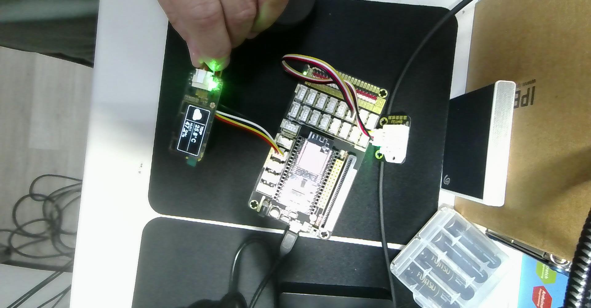
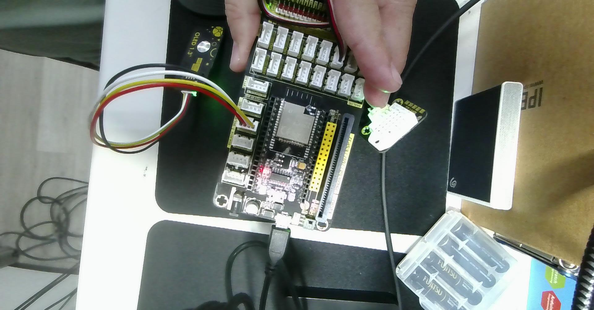

預設數值已同步為實拍成果（25.8 °C / 47.2 %）。可拖曳滑桿改變溫濕度，或切換「溫度計/水滴符號版」與「實拍 TEMP/HUMI 外框版」比較兩種 128×64 版面設計！
SUNNY - Dry & Clear
本專案將 1112-1.txt 中的兩支範例程式——Adafruit DHT_Unified 溫濕度感測器範例與 U8g2 Weather.ino 天氣圖示與跑馬燈範例——整合運行於 NodeMCU-32S (ESP32) 開發板，並針對 SSD1306 / SH1106 128×64 I2C OLED 重新規劃高辨識度的「黃金三區儀表板版面」。
Weather.ino 版面需要重新規劃？
在原始 Weather.ino 中，作者使用 32px 超大字型 u8g2_font_logisoso32_tf 於右側單獨顯示整數溫度（如 27°C），導致右側垂直空間（y: 0~48）被完全佔滿，無法同時容納相對濕度（%RH）與小數點精確度。因此在 1112-1.ino 中，我們將 128×64 像素劃分為以下區域：
| 版面分區 | 像素座標範圍 (x, y) |
尺寸 (W × H) |
顯示內容與選用字型 / 繪圖 API |
|---|---|---|---|
| ① 左側天氣圖示區 | x: 0~49, y: 0~49 |
50 × 50 px |
u8g2_font_open_iconic_weather_6x_t / embedded_6x_t（48×48 向量天氣符號） |
| ② 右上溫度資訊區 | x: 51~127, y: 0~24 |
77 × 25 px |
自繪 7×16 溫度計符號 + u8g2_font_helvB12_tf 顯示 XX.X°C |
| ③ 右下濕度資訊區 | x: 51~127, y: 26~49 |
77 × 24 px |
自繪 7×15 水滴符號 + u8g2_font_helvB12_tf 顯示 XX.X % |
| ④ 底部跑馬燈狀態列 | x: 0~127, y: 51~63 |
128 × 13 px |
u8g2_font_8x13_mf 等寬字型，平滑捲動顯示天氣與舒適度診斷文字 |
| ⑤ 儀表板分隔格線 | x=50、y=25、y=50 |
1 px 實線 |
drawVLine(50,0,50)、drawHLine(50,25,78)、drawHLine(0,50,128) |
SSD1306 OLED 的解析度為寬 W = 128 px（x: 0~127）、高 H = 64 px（y: 0~63），左上角為原點 (0, 0)。在 U8g2 預設模式下，文字與 Glyph 的繪製基準點（Baseline）為字元左下角：
x=0 x=50 x=54 x=66 x=127
┌────────────────────┬────────────────────────────────────────────┐ y=0
│ │ [🌡️] 26.5°C (helvB12_tf, baseline y=19) │
│ 48x48 天氣符號 ├────────────────────────────────────────────┤ y=25 (drawHLine)
│ drawGlyph(0, 48) │ [💧] 62.0 % (helvB12_tf, baseline y=45) │
├────────────────────┴────────────────────────────────────────────┤ y=50 (drawHLine)
│ PARTLY CLOUDY - Comfort (8x13_mf 跑馬燈, baseline y=63) │
└─────────────────────────────────────────────────────────────────┘ y=6348 px 圖示 + 2 px 緩衝 = 50 px（垂直分隔線位於 x = 50）。右區可用寬度為 77 px（x: 51~127）。迷你溫度計與水滴符號配置於 x = 54~61，數值起點設於 x = 66。使用 u8g2_font_helvB12_tf 時，"26.5°C" 寬約 46 px，終點為 66 + 46 = 112 <= 127，保留充足安全邊距。50 px 由 y = 25 水平線平分為溫度格（y: 0~24，文字 Baseline y = 19）與濕度格（y: 26~49，文字 Baseline y = 45）；底部狀態列（y: 51~63）高 13 px，搭配 u8g2_font_8x13_mf（Baseline y = 63）。| 符號類型 | 符號名稱 | 實作方式 / 字型 | 座標與代碼 / 幾何結構 | 觸發條件 |
|---|---|---|---|---|
| 主天氣符號 (48×48) | ☀️ 晴天 (SUN) |
u8g2_font_open_iconic_weather_6x_t |
drawGlyph(0, 48, 69) |
相對濕度 < 55% |
| 主天氣符號 (48×48) | ⛅ 晴時多雲 (SUN_CLOUD) |
u8g2_font_open_iconic_weather_6x_t |
drawGlyph(0, 48, 65) |
相對濕度 55% ~ 69.9% |
| 主天氣符號 (48×48) | ☁️ 多雲 (CLOUD) |
u8g2_font_open_iconic_weather_6x_t |
drawGlyph(0, 48, 64) |
相對濕度 70% ~ 79.9% 或感測異常 |
| 主天氣符號 (48×48) | 🌧️ 下雨 (RAIN) |
u8g2_font_open_iconic_weather_6x_t |
drawGlyph(0, 48, 67) |
相對濕度 >= 80% |
| 主天氣符號 (48×48) | ⛈️ 雷雨 (THUNDER) |
u8g2_font_open_iconic_embedded_6x_t |
drawGlyph(0, 48, 67) |
相對濕度 >= 85% 且溫度 >= 28°C |
| 項目符號 (8×16) | 🌡️ 溫度計 (Thermometer) |
drawRFrame + drawDisc + drawHLine |
圓角玻璃管 + 底部感溫球 + 右側三條刻度線 | 固定顯示於右上溫度欄左側 (54, 4) |
| 項目符號 (7×15) | 💧 水滴 (Droplet) |
drawTriangle + drawDisc + drawPixel |
上方尖錐三角形 + 下方實心圓弧 | 固定顯示於右下濕度欄左側 (54, 30) |
millis() 非阻塞取樣與跑馬燈雙速率協同機制
DHT22 硬體要求兩次取樣間隔至少 2,000 ms，而底部跑馬燈每幀僅需 25 ms（約 40 FPS）。本程式在 loop() 中透過 if (now - lastSensorRead >= delayMS) 每 2 秒更新一次溫濕度快取變數，其餘時間直接重繪畫面並推進 scrollOffset += 2，兼具感測穩定度與動畫流暢度。
在 1112-1.txt 中列出了超過 300 行被註解的 U8G2_... 建構類別（Constructors）。只要掌握 U8g2 的六段式命名規則 + 兩項建構參數，就能在任何開發板與 OLED 螢幕組合下秒選正確的建構類別：
U8G2 _ SSD1306 _ 128X64 _ NONAME _ 1 _ HW_I2C u8g2( U8G2_R0, U8X8_PIN_NONE );
└──┘ └─────┘ └────┘ └────┘ └─┘ └────┘ └─────┘ └───────────┘
① ② ③ ④ ⑤ ⑥ ⑦ ⑧| 欄位 | 名稱片段 | 代表意義 | 常見選項與工程選型說明 |
|---|---|---|---|
| ① | U8G2 |
函式庫運作家族 |
• U8G2：完整圖形模式（支援任意字型、畫線、畫框、畫圓與天氣 Glyph）。• U8X8：純文字 Tile 模式（不佔 MCU RAM，但只能顯示 8×8 固定區塊且不支援畫線與變動寬度字型）。
|
| ② | SSD1306 |
OLED 驅動控制器 IC |
• SSD1306：最常見於 0.96 吋 OLED，內建 128×64 bits GDDRAM（Column 0~127）。• SH1106：最常見於 1.3 吋 OLED（如本次實作照片背面標示 OLED 1.3"），內建 132×64 bits RAM（面板接在中間 Column 2~129）。• SSD1309 / SH1107：常見於 1.5 吋或 2.42 吋大型 OLED。
|
| ③ | 128X64 |
面板實體像素解析度 |
• 128X64：寬 128 px × 高 64 px（共 8 Pages，每 Page 高 8 px）。• 128X32：0.91 吋長條形 OLED。• 72X40 / 64X48：0.42 吋或 0.66 吋迷你 OLED。
|
| ④ | NONAME |
面板初始化序列變體 |
• NONAME：市售通用模組標準初始化參數。• ALT0：修正少數面板「每隔一行跳行（Every 2nd line skipped）」的 COM 腳位映射問題。• VCOMH0：放寬 VCOMH 電壓範圍，使 u8g2.setContrast() 對比度調整幅度最大化。
|
| ⑤ | _1_ |
MCU 顯示緩衝區模式 |
• _1_ (1 Page = 128 Bytes)：每次僅緩衝 8 行像素，firstPage()/nextPage() 需重繪 8 輪，最省 RAM。• _2_ (2 Pages = 256 Bytes)：每次緩衝 16 行像素，重繪 4 輪，速度提升一倍。• _F_ (Full Frame = 1,024 Bytes)：一次緩衝整個 128×64 畫面，支援 clearBuffer() + sendBuffer()。ESP32 擁有 520 KB SRAM，強烈推薦可用 _F_！
|
| ⑥ | HW_I2C |
物理層通訊協定 |
• HW_I2C（硬體 I2C）：使用 MCU 專用硬體 I2C 外設（<Wire.h>），ESP32 預設 SDA=21, SCL=22，時脈可達 400kHz，速度快且不佔 CPU。• SW_I2C（軟體模擬 I2C）：用一般 GPIO 軟體模擬時脈，可接任意腳位但傳輸較慢。• 4W_HW_SPI / 4W_SW_SPI：7-Pin SPI 介面 OLED 使用。
|
| ⑦ | U8G2_R0 |
畫面旋轉與鏡像方向 |
• U8G2_R0：0° 正常橫向 (128×64)。• U8G2_R1：順時針 90° 直向 (64×128)。• U8G2_R2：180° 上下翻轉橫向 (128×64，排線朝向受限時極實用）。• U8G2_R3：順時針 270° 直向 (64×128)。• U8G2_MIRROR：水平鏡像（抬頭顯示器 HUD 反射投影專用）。
|
| ⑧ | U8X8_PIN_NONE |
硬體 Reset 與自訂腳位 |
• 4-Pin I2C OLED 模組已內建 RC 上電重置電路，無外部 RES 腳，故填 U8X8_PIN_NONE。• 在 ESP32 上若需改用非預設腳位執行硬體 I2C，可在後方追加 clock 與 data：(U8G2_R0, U8X8_PIN_NONE, /*SCL=*/ 22, /*SDA=*/ 21)。
|
SSD1306) vs 1.3 吋 (SH1106) 建構類別差異
在本次實作照片中，模組背面標示為 OLED 1.3"。許多初學者在混用 0.96 吋與 1.3 吋 I2C OLED 時會遇到「畫面左移 2 格、最右邊出現一條垂直雜訊亮線」的現象，原因正是驅動 IC 的內部 RAM 寬度不同：
// 【情況 A】使用 0.96 吋 OLED (SSD1306 晶片，內部 RAM 為 128x64)
U8G2_SSD1306_128X64_NONAME_1_HW_I2C u8g2(U8G2_R0, /* reset=*/ U8X8_PIN_NONE);
// 【情況 B】使用 1.3 吋 OLED (若為 SH1106 晶片，內部 RAM 為 132x64，面板對應 Column 2~129)
// 若發現使用 SSD1306 建構子時外框左邊被切掉 2px 或右邊有雜訊線，請改用下行：
// U8G2_SH1106_128X64_NONAME_1_HW_I2C u8g2(U8G2_R0, /* reset=*/ U8X8_PIN_NONE);
// 【情況 C】在 NodeMCU-32S (ESP32) 上啟用 Full Buffer (_F_) 並明確指定 SCL=22, SDA=21：
// U8G2_SSD1306_128X64_NONAME_F_HW_I2C u8g2(U8G2_R0, /* reset=*/ U8X8_PIN_NONE, /* clock=*/ 22, /* data=*/ 21);| 週邊模組 | 模組腳位 | NodeMCU-32S 腳位 | 板載絲印 | 接線說明 |
|---|---|---|---|---|
| DHT22 溫濕度模組 | VCC / + |
3V3 (3.3V) | 3V3 |
供應 3.3V 電源（與 ESP32 邏輯準位一致） |
| DHT22 溫濕度模組 | DATA / OUT |
GPIO 16 | RX2 / IO16 |
單匯流排數位訊號腳（對應 #define DHTPIN 16） |
| DHT22 溫濕度模組 | GND / - |
GND | GND |
系統共地 |
| 1.3" / 0.96" OLED | GND |
GND | GND |
共地（4-Pin 防呆排線黑線） |
| 1.3" / 0.96" OLED | VCC |
3V3 (3.3V) | 3V3 |
供應 3.3V 電源（4-Pin 防呆排線紅線） |
| 1.3" / 0.96" OLED | SCL (SCK) |
GPIO 22 | SCL IO22 |
ESP32 預設硬體 I2C 時脈腳位（4-Pin 防呆排線白線） |
| 1.3" / 0.96" OLED | SDA |
GPIO 21 | SDA IO21 |
ESP32 預設硬體 I2C 資料腳位（4-Pin 防呆排線黃線） |
1112-1.ino)// ============================================================================
// 1112-1.ino — NodeMCU-32S (ESP32) + DHT 溫濕度感測 + SSD1306 128x64 OLED 版面設計
// 整合來源：1112-1.txt (Adafruit DHT_Unified 範例 + U8g2 Weather.ino 範例)
//
// 【功能特色】
// 1. 透過 NodeMCU-32S 的 GPIO 16 讀取 DHT22/DHT11 溫度 (°C) 與相對濕度 (%RH)
// 2. 依據即時溫濕度自動判斷 5 種天氣狀態，於左側繪製 48x48 Open Iconic 天氣符號
// 3. 規劃 128x64 OLED 黃金三區版面（左區 48x48 天氣圖示、右區溫度計/水滴符號與數值、底區狀態列）
// 4. 採用 millis() 非阻塞定時讀取感測器，搭配底部平滑跑馬燈狀態列
//
// 【硬體接線 (NodeMCU-32S / ESP32)】
// 1. DHT 溫濕度感測器：
// - VCC -> 3V3 (3.3V)
// - DATA -> GPIO 16 (板子上標示 RX2 / IO16 / 16)
// - GND -> GND
// 2. SSD1306 OLED (128x64, I2C 介面)：
// - GND -> GND
// - VCC -> 3V3 (3.3V)
// - SCL -> GPIO 22 (ESP32 預設硬體 I2C SCL)
// - SDA -> GPIO 21 (ESP32 預設硬體 I2C SDA)
//
// 【需要的 Arduino 函式庫】
// - DHT sensor library (by Adafruit)
// - Adafruit Unified Sensor (by Adafruit)
// - U8g2 (by olikraus)
// ============================================================================
#include <Arduino.h>
#include <Wire.h>
#include <U8g2lib.h>
#include <Adafruit_Sensor.h>
#include <DHT.h>
#include <DHT_U.h>
// -------------------- 1. DHT 溫濕度感測器設定 --------------------
#define DHTPIN 16 // Digital pin connected to the DHT sensor (NodeMCU-32S GPIO 16)
// 請依實際使用的感測器型號取消註解對應行：
//#define DHTTYPE DHT11 // DHT 11 (藍色外殼)
#define DHTTYPE DHT22 // DHT 22 (AM2302，白色外殼，1112-1.txt 預設)
//#define DHTTYPE DHT21 // DHT 21 (AM2301)
DHT_Unified dht(DHTPIN, DHTTYPE);
uint32_t delayMS = 2000; // 感測器取樣間隔 (ms)
uint32_t lastSensorRead = 0; // 上次讀取感測器的時間戳記
// -------------------- 2. SSD1306 128x64 OLED 設定 --------------------
// 使用 ESP32 硬體 I2C (預設腳位：SCL = GPIO 22, SDA = GPIO 21)
// 採用 _1_ (Page Buffer 模式) 兼顧記憶體效率與相容性
U8G2_SSD1306_128X64_NONAME_1_HW_I2C u8g2(U8G2_R0, /* reset=*/ U8X8_PIN_NONE);
// -------------------- 3. 天氣符號常數定義 (取自 Weather.ino) --------------------
#define SUN 0 // 晴天 (Glyph 69)
#define SUN_CLOUD 1 // 晴時多雲 (Glyph 65)
#define CLOUD 2 // 多雲 / 陰天 (Glyph 64)
#define RAIN 3 // 下雨 / 潮濕 (Glyph 67)
#define THUNDER 4 // 雷雨 / 悶熱高濕 (Embedded Glyph 67)
// 儲存最新溫濕度與天氣狀態
float currentTemp = NAN;
float currentHum = NAN;
uint8_t currentSymbol = CLOUD;
int16_t scrollOffset = -128; // 底部狀態列跑馬燈位移量
// -------------------- 4. 依溫濕度決定天氣符號與狀態文字 --------------------
uint8_t getWeatherSymbol(float temp, float hum) {
if (isnan(temp) || isnan(hum)) {
return CLOUD; // 感測器讀取失敗時預設顯示雲朵
}
if (hum >= 85.0 && temp >= 28.0) {
return THUNDER; // 高溫且高濕：雷雨符號
} else if (hum >= 80.0) {
return RAIN; // 濕度 >= 80%：下雨符號
} else if (hum >= 70.0) {
return CLOUD; // 濕度 70% ~ 79.9%：多雲符號
} else if (hum >= 55.0) {
return SUN_CLOUD; // 濕度 55% ~ 69.9%：晴時多雲
} else {
return SUN; // 濕度 < 55%：晴天太陽符號
}
}
const char* getWeatherStatusText(uint8_t symbol, bool sensorOk) {
if (!sensorOk) {
return "Sensor Error! Check GPIO 16";
}
switch (symbol) {
case SUN: return "SUNNY - Dry & Clear";
case SUN_CLOUD: return "PARTLY CLOUDY - Comfort";
case CLOUD: return "CLOUDY - Mild Humid";
case RAIN: return "RAINY - High Humidity";
case THUNDER: return "THUNDER - Hot & Humid";
default: return "Monitoring...";
}
}
// -------------------- 5. 繪製左側 48x48 天氣圖示 (取自 Weather.ino) --------------------
void drawWeatherSymbol(u8g2_uint_t x, u8g2_uint_t y, uint8_t symbol) {
// 使用 U8g2 內建 Open Iconic 6x (48x48) 向量圖示字型
switch (symbol) {
case SUN:
u8g2.setFont(u8g2_font_open_iconic_weather_6x_t);
u8g2.drawGlyph(x, y, 69);
break;
case SUN_CLOUD:
u8g2.setFont(u8g2_font_open_iconic_weather_6x_t);
u8g2.drawGlyph(x, y, 65);
break;
case CLOUD:
u8g2.setFont(u8g2_font_open_iconic_weather_6x_t);
u8g2.drawGlyph(x, y, 64);
break;
case RAIN:
u8g2.setFont(u8g2_font_open_iconic_weather_6x_t);
u8g2.drawGlyph(x, y, 67);
break;
case THUNDER:
u8g2.setFont(u8g2_font_open_iconic_embedded_6x_t);
u8g2.drawGlyph(x, y, 67);
break;
}
}
// -------------------- 6. 繪製右側小圖示：溫度計與水滴符號 --------------------
// 繪製 7x16 px 迷你溫度計符號 (左上座標 x, y)
void drawThermometerIcon(u8g2_uint_t x, u8g2_uint_t y) {
u8g2.drawRFrame(x + 1, y, 5, 11, 1); // 溫度計玻璃管外框
u8g2.drawDisc(x + 3, y + 12, 3); // 底部感溫球
u8g2.drawVLine(x + 3, y + 4, 6); // 內部水銀柱
u8g2.drawHLine(x + 6, y + 2, 2); // 右側刻度線 1
u8g2.drawHLine(x + 6, y + 5, 2); // 右側刻度線 2
u8g2.drawHLine(x + 6, y + 8, 2); // 右側刻度線 3
}
// 繪製 7x15 px 迷你水滴濕度符號 (左上座標 x, y)
void drawDropletIcon(u8g2_uint_t x, u8g2_uint_t y) {
u8g2.drawTriangle(x + 3, y, x, y + 9, x + 6, y + 9); // 水滴上方尖錐
u8g2.drawDisc(x + 3, y + 10, 3); // 水滴下方圓弧
u8g2.drawPixel(x + 2, y + 9); // 修補交界像素
}
// -------------------- 7. 繪製底部跑馬燈文字 (改良自 Weather.ino) --------------------
void drawScrollString(int16_t offset, const char *s) {
static char buf[36];
size_t len = strlen(s);
size_t char_offset = 0;
u8g2_uint_t dx = 0;
size_t visible = 0;
u8g2.setFont(u8g2_font_8x13_mf);
if (offset < 0) {
char_offset = (-offset) / 8;
dx = offset + char_offset * 8;
if (char_offset >= u8g2.getDisplayWidth() / 8) return;
visible = u8g2.getDisplayWidth() / 8 - char_offset + 1;
if (visible > len) visible = len;
strncpy(buf, s, visible);
buf[visible] = '\0';
u8g2.drawStr(char_offset * 8 - dx, 63, buf);
} else {
char_offset = offset / 8;
if (char_offset >= len) return;
dx = offset - char_offset * 8;
visible = len - char_offset;
if (visible > u8g2.getDisplayWidth() / 8 + 1) {
visible = u8g2.getDisplayWidth() / 8 + 1;
}
strncpy(buf, s + char_offset, visible);
buf[visible] = '\0';
u8g2.drawStr(-dx, 63, buf);
}
}
// -------------------- 8. 繪製 128x64 OLED 整合版面 --------------------
void drawDashboard(const char *statusMsg) {
// 1. 左區 (x: 0~47, y: 0~48)：繪製 48x48 天氣大圖示
drawWeatherSymbol(0, 48, currentSymbol);
// 2. 垂直與水平分隔線，建構儀表板網格感
u8g2.drawVLine(50, 0, 50); // 左圖示區與右數值區垂直分隔線 (x=50)
u8g2.drawHLine(50, 25, 78); // 溫度與濕度水平分隔線 (y=25)
u8g2.drawHLine(0, 50, 128); // 主顯示區與底部狀態列水平分隔線 (y=50)
// 3. 右上區 (x: 54~127, y: 0~24)：溫度計符號 + 即時溫度
drawThermometerIcon(54, 4);
u8g2.setFont(u8g2_font_helvB12_tf);
u8g2.setCursor(66, 19);
if (isnan(currentTemp)) {
u8g2.print("--.-°C");
} else {
u8g2.print(currentTemp, 1);
u8g2.print("°C");
}
// 4. 右下區 (x: 54~127, y: 26~49)：水滴符號 + 即時相對濕度
drawDropletIcon(54, 30);
u8g2.setFont(u8g2_font_helvB12_tf);
u8g2.setCursor(66, 45);
if (isnan(currentHum)) {
u8g2.print("--.- %");
} else {
u8g2.print(currentHum, 1);
u8g2.print(" %");
}
// 5. 底部狀態列 (x: 0~127, y: 51~63)：跑馬燈顯示天氣與舒適度描述
drawScrollString(scrollOffset, statusMsg);
}
// -------------------- 9. 讀取 DHT 感測器並輸出至序列埠 --------------------
void readDHTSensor() {
sensors_event_t event;
// 讀取溫度事件
dht.temperature().getEvent(&event);
if (isnan(event.temperature)) {
Serial.println(F("Error reading temperature!"));
currentTemp = NAN;
} else {
currentTemp = event.temperature;
Serial.print(F("Temperature: "));
Serial.print(currentTemp, 1);
Serial.println(F("°C"));
}
// 讀取濕度事件
dht.humidity().getEvent(&event);
if (isnan(event.relative_humidity)) {
Serial.println(F("Error reading humidity!"));
currentHum = NAN;
} else {
currentHum = event.relative_humidity;
Serial.print(F("Humidity: "));
Serial.print(currentHum, 1);
Serial.println(F("%"));
}
// 更新對應的天氣圖示代碼
currentSymbol = getWeatherSymbol(currentTemp, currentHum);
Serial.println(F("------------------------------------"));
}
// -------------------- 10. 初始化設定 setup() --------------------
void setup(void) {
Serial.begin(115200); // ESP32 建議使用 115200 baud (亦可改回 9600)
delay(100);
// 1. 初始化 SSD1306 OLED
u8g2.begin();
u8g2.enableUTF8Print(); // 啟用 UTF-8 支援以正常顯示 "°C"
// 2. 初始化 DHT 溫濕度感測器並印出感測器硬體資訊
dht.begin();
Serial.println(F("DHTxx Unified Sensor + U8g2 OLED Weather Station (1112-1)"));
sensor_t sensor;
dht.temperature().getSensor(&sensor);
Serial.println(F("------------------------------------"));
Serial.println(F("Temperature Sensor"));
Serial.print (F("Sensor Type: ")); Serial.println(sensor.name);
Serial.print (F("Driver Ver: ")); Serial.println(sensor.version);
Serial.print (F("Unique ID: ")); Serial.println(sensor.sensor_id);
Serial.print (F("Max Value: ")); Serial.print(sensor.max_value); Serial.println(F("°C"));
Serial.print (F("Min Value: ")); Serial.print(sensor.min_value); Serial.println(F("°C"));
Serial.print (F("Resolution: ")); Serial.print(sensor.resolution); Serial.println(F("°C"));
Serial.println(F("------------------------------------"));
dht.humidity().getSensor(&sensor);
Serial.println(F("Humidity Sensor"));
Serial.print (F("Sensor Type: ")); Serial.println(sensor.name);
Serial.print (F("Driver Ver: ")); Serial.println(sensor.version);
Serial.print (F("Unique ID: ")); Serial.println(sensor.sensor_id);
Serial.print (F("Max Value: ")); Serial.print(sensor.max_value); Serial.println(F("%"));
Serial.print (F("Min Value: ")); Serial.print(sensor.min_value); Serial.println(F("%"));
Serial.print (F("Resolution: ")); Serial.print(sensor.resolution); Serial.println(F("%"));
Serial.println(F("------------------------------------"));
// 設定感測器最小讀取間隔 (至少 2000ms 以確保穩定)
delayMS = sensor.min_delay / 1000;
if (delayMS < 2000) {
delayMS = 2000;
}
// 啟動時立即讀取一次溫濕度
readDHTSensor();
lastSensorRead = millis();
}
// -------------------- 11. 主迴圈 loop() --------------------
void loop(void) {
// 1. 非阻塞定時讀取 DHT 溫濕度 (每 delayMS 毫秒更新一次數值)
uint32_t now = millis();
if (now - lastSensorRead >= delayMS) {
lastSensorRead = now;
readDHTSensor();
}
// 2. 取得目前天氣狀態字串
bool sensorOk = (!isnan(currentTemp) && !isnan(currentHum));
const char *statusMsg = getWeatherStatusText(currentSymbol, sensorOk);
// 3. U8g2 Page Buffer 繪圖迴圈
u8g2.firstPage();
do {
drawDashboard(statusMsg);
} while (u8g2.nextPage());
// 4. 更新底部狀態列跑馬燈位移量
delay(25);
scrollOffset += 2;
if (scrollOffset > (int16_t)strlen(statusMsg) * 8 + 4) {
scrollOffset = -(int16_t)u8g2.getDisplayWidth();
}
}以下為本次在 NodeMCU-32S (ESP32) 擴充板 上連接 DHT22 溫濕度傳感器 與 1.3 吋 I2C OLED 的實際通電運作照片：


128×64 矩形外框（drawFrame）與分隔線，左側清晰顯示 48×48 雲朵天氣符號，右側上下分欄即時顯示實測環境數據：TEMP: 25.8°C 與 HUMI: 47.2%。SDA IO21 | SCL IO22，直連背面標示 OLED 1.3" 的顯示模組；右側白色網格模組印有 DHT22 溫濕度傳感器，連接至上排數位訊號埠（GPIO 16）。drawVLine(50, 0, 50)、drawHLine(50, 25, 78) 或外框 drawFrame(0, 0, 128, 64) 建立明確的視覺邊界，避免左側 48×48 天氣大圖示與右側數字視覺沾黏。TEMP / HUMI）或幾何繪製的溫度計符號與水滴符號，都能清楚區分溫度與相對濕度兩個物理量。50 px 保持穩定靜態顯示，僅讓底部 13 px 狀態列進行跑馬燈滾動，避免畫面閃爍造成閱讀疲勞。_1_) 與 Full Frame Buffer (_F_) 的進階切換
1112-1.txt 預設使用 U8G2_SSD1306_128X64_NONAME_1_HW_I2C（Page Buffer 模式，每次僅配置 128 Bytes 緩衝區）。由於 NodeMCU-32S (ESP32) 擁有高達 520 KB SRAM，若未來希望進一步提高畫面更新率，也可將建構子中的 _1_ 改為 _F_（Full Frame Buffer，配置 1,024 Bytes 緩衝區），並以 u8g2.clearBuffer() / u8g2.sendBuffer() 取代 firstPage() / nextPage() 迴圈。
'C:\Users\User\Desktop\onclass\1112-1.txt' 整合這個程式 在nodemc32s上 讓OLED1306 128x64顯示溫濕度及符號，並規劃適當的版面, 儲存成1112-1.ino1112-1.txt 中的 DHT_Unified（GPIO 16）與 U8g2 Weather.ino（SSD1306 128×64 硬體 I2C：SDA=GPIO 21, SCL=GPIO 22），針對 128×64 解析度規劃黃金三區版面（左側 48×48 天氣圖示、右側自繪溫度計/水滴符號與即時溫濕度數值、底部動態跑馬燈狀態列），儲存為 1112-1.ino 並建立完整技術筆記與互動模擬器（.md 與 .html）。加入筆記的實作照片，另外增加u8G2建構類別的補充說明2026-11-12-1457-oled-display.jpg：OLED 實測顯示雲朵圖示、TEMP 25.8°C、HUMI 47.2%；2026-11-12-1457-hardware-wiring.jpg：ESP32 擴充板 SDA IO21 / SCL IO22、DHT22 溫濕度傳感器 與 OLED 1.3" 背面絲印）歸檔至 ec/ 並補入筆記第 2.4 節；同時於第 1.4 節新增「U8g2 建構類別（Constructor Classes）深度補充說明」，完整拆解六段式命名規則、0.96 吋 SSD1306 與 1.3 吋 SH1106 記憶體偏移差異、_1_ / _2_ / _F_ 緩衝區模式比較及旋轉方向參數；同步更新 .md、.html 與全站索引。